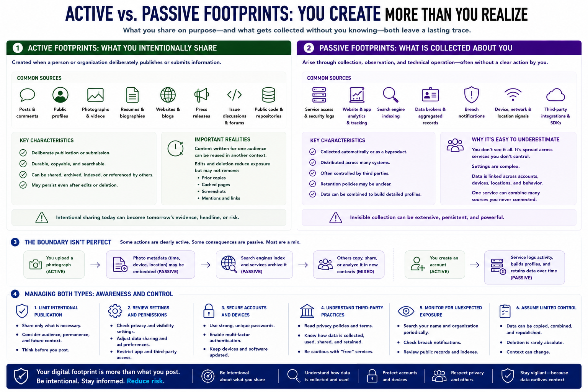

Active and Passive Footprints
Connecting to LMS... Progress: in progress

Narration
Active footprints are created when a person or organization intentionally publishes or submits information. Posts, public profiles, comments, photographs, videos, resumes, websites, press releases, issue discussions, and public repositories can all become durable and searchable.
Intentional sharing does not mean every future use was expected. A post written for one audience may be copied, archived, indexed, or viewed years later in a different context. Edits and deletion can reduce exposure but may not remove prior copies or references.
Passive footprints arise through collection, observation, and technical operation. Services generate access and security logs. Websites and applications may use analytics or tracking. Search engines index pages. Data brokers compile records. Breach notifications may indicate that account data was exposed by a compromised provider.
People and organizations often underestimate passive exposure because it is distributed across many systems and controlled by third parties. Settings may be complex, retention may be unclear, and one service can combine account, device, location, and behavioral data.
The boundary is not always perfect. Uploading a photograph is active, while embedded metadata or subsequent indexing may be passive. Creating an account is deliberate, while the service's long-term logging and profiling may not be obvious to the user.
Managing both types requires awareness and control. Limit intentional publication to what is necessary, review account and service settings, secure accounts, understand important third-party practices, and monitor for unexpected exposure. Do not assume that invisible collection is harmless or that deliberate sharing remains under the original publisher's control.